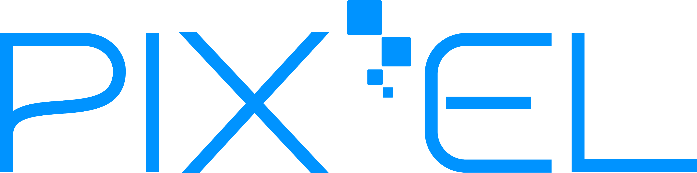

Innovation
Pix'el s'active par zones indépendantes et détecte automatiquement les objets afin de chauffer ou refroidir uniquement ce qui doit l'être.

Nous contacterConcours Lépine International Paris 2024
La surface efficace.
Un système flexible et versatile de maintien au chaud ou au froid, pensé pour activer uniquement les zones utiles, détecter les objets posés et piloter chaque module en toute indépendance.
Concours Lépine International Paris
Léonard de Vinci, Comexposium
Chaud, froid et zones indépendantes
Qu'est-ce qu'un Pix'el ?
Pix'el est un système flexible de maintien au chaud ou au froid pouvant s'activer en présence d'un objet à réchauffer ou à refroidir, peu importe sa matière.
Chaque module fonctionne de manière indépendante et peut être associé à d'autres modules identiques afin de composer une surface adaptée au contexte.
En bref
Pix'el s'active par zones indépendantes et détecte automatiquement les objets afin de chauffer ou refroidir uniquement ce qui doit l'être.
Le système fonctionne lorsque c'est nécessaire. Certaines zones peuvent rester inactives, pour éviter d'alimenter toute une surface inutilement.
Les modules peuvent être combinés entre eux pour former une plaque plus grande, tout en conservant un fonctionnement indépendant.
En détails
Une plaque de diffusion en matériau conducteur thermique.
Un module à semi-conducteurs piloté par microprocesseur, fixé directement sous la plaque.
Un détecteur de présence d'objet intégré au module thermostat.
Plusieurs modes de fonctionnement commandables via une application Wi-Fi.
Applications
Buffets, comptoirs, restauration, hôtellerie, traiteurs, événements, cuisines professionnelles, espaces de présentation, mais aussi usages grand public comme un comptoir intelligent à la maison.
Pix'el ouvre la voie à des surfaces réactives, chauffantes et rafraîchissantes à volonté, capables de s'adapter à des besoins très différents sans multiplier les équipements.
Contact
Imaginé et développé par David Flion, Pix'el est aujourd'hui présenté aux professionnels, aux partenaires et aux personnes curieuses de découvrir cette surface intelligente.